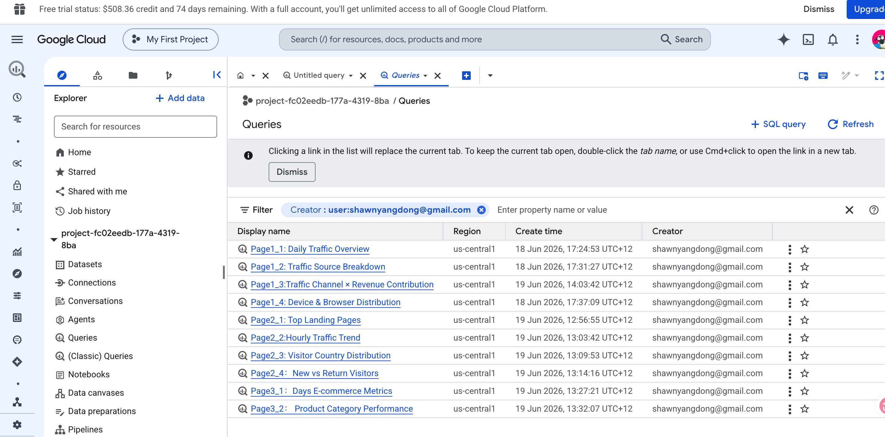

Dataset & Platform
The project uses 12 months of obfuscated GA360 data from the Google Merchandise Store, hosted on Google BigQuery. The dataset contains session-level and transaction-level events — traffic source, device, geo, page views, transactions, and revenue — making it ideal for end-to-end e-commerce analytics.
Workflow Overview
From raw data to actionable insights, the process follows four stages:
Data Exploration & SQL
Wrote queries in BigQuery to clean, aggregate, and join session and transaction tables — building a structured data model optimised for dashboard consumption.
Power BI Model & Map
Imported the query results into Power BI and built a star-schema model. Used Power BI Map (Azure Maps) connected directly to the model for geo-visualisations.
Dashboard — Overview to Detail
A layered dashboard that starts with high-level KPIs (revenue, conversion rate, traffic), then lets users drill into channel performance, product categories, and geographic segments.
AI-Assisted BI Development
Used Claude (via VS Code + Claude Code) throughout the process — generating DAX measures, refining visual layouts, exploring data patterns, and accelerating iteration cycles.

Dashboard Structure
The dashboard moves from a high-level executive summary down to granular business insights:
Page 1 — Executive Overview: Revenue trend, conversion rate, sessions,
and top channels at a glance.
Page 2 — Channel & Campaign Analysis: Performance breakdown by source/medium,
assisted conversions, and ROAS proxies.
Page 3 — Product & Geographic Drill-down: Category-level revenue,
regional heat maps via Power BI Map, and device segmentation.
Each page is connected through cross-filtering — clicking a segment on one page propagates the context to all visuals, enabling true exploratory analysis.
AI + BI: A Smarter Workflow
One of the key experiments in this project was integrating AI directly into the BI development cycle:
Using Claude (via VS Code + Claude Code), I was able to:
• Generate and refine DAX measures iteratively without context-switching
• Prototype visual layouts and explore data patterns conversationally
• Validate SQL logic and suggest query optimisations
• Automate repetitive BI tasks by saving high-frequency workflows as reusable skills
This approach turned Power BI from a manual drag-and-drop tool into a conversational analytics interface — where the AI handles the heavy lifting of calculation logic and visual configuration, while I focus on business questions and insight interpretation.
⚡ Skill Reuse
High-frequency BI tasks — standard DAX patterns, KPI templating, data model checks — are documented as reusable skills. This means future dashboards start from a proven foundation, not from scratch.